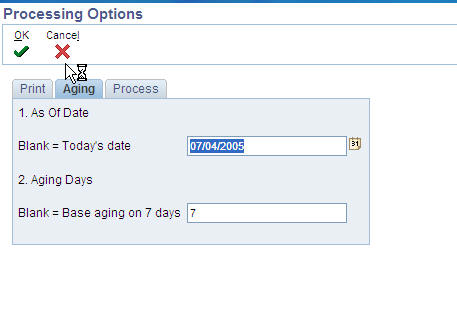
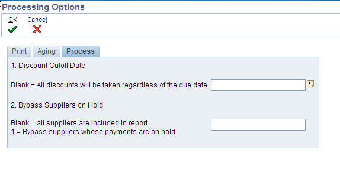

| Purpose |
| Scope |
| Details |
| Overview |
| Data Selection |
| Processing Options |
| Frequently Asked Questions |
| Question 1: How can we create a Cash Requirement Report that includes both suppliers on hold as well as vouchers that are on hold? |
| Question 2: Is it possible to fetch the remarks (RMK) field from the F0411 table and add a column on the report to show the remarks that are on the voucher? |
| Question 3: Is there a way to ensure that both the Cash Requirements report and the Create Payment Control Groups are created for the exact same dollar amount for management reporting purposes? |
| Question 5: Why is the bank account balance blank on the Cash Requirements Report (R04431)? |
This document discusses how to run the Cash Requirement Report within Oracle JD Edwards EnterpriseOne Financial system.
This document is intended for users who are running the Cash Requirement (R04431) report.
The Cash Requirements Report (R04431) can be used to determine how much money is needed for payments and how much money is available in your bank accounts. It can also be used to review upcoming cash requirements.
The report lists vouchers by supplier in three aging columns, provides a total for each supplier and each bank account, and shows the total amount necessary to pay open vouchers. The transactions included on this report are pulled from the Accounts Payable Ledger (F0411). An example of the output produced is provided below.
This UBE is accessed from the Automatic Payment Processing (G0413) menu.
The data selection for the Cash Requirements Report (R04431) can be used to narrow down the vouchers that are pulled from the Accounts Payable Ledger (F0411) and included on the report. For example, if you would like to include only vouchers with a specific Payment Instrument (PYIN) and exclude paid items, you would use data selection similar to the screenshot.

Print Tab

Aging Tab

Process Tab

Answer 1: To include suppliers on hold, verify that processing option #2 on the tab Process is set to a blank. This will include suppliers on hold. To include vouchers with a Pay Status of "H" - hold, add data selection for the pay status of H also. Data Selection should be defined as Pay Status Code = A, H.
Answer 2: This functionality is not available within the Cash Requirements Report. It is possible to modify the report to fit your business requirements by using RDA (Report Design Aid). However, this would be considered a custom modification and would not be supported by Oracle Software Support.
Answer 3: The functionality does not exist to ensure that these reports will be created for the exact same amounts. One way you could accomplish this would be to set a time during the day to run both reports while no new AP transactions are being entered into the system.
Answer 4: This was requested, but currently this functions as designed. Only the P041016 and P041017 have a one-to-one relationship between the F0411 records and F0911 records. When using Standard Voucher Entry (P0411) or Speed Voucher Entry (P0411SV), vouchers do not have a one-to-one relationship between the records in these tables. Multiple G/L distribution lines can be created for one pay item within the F0411 table. Therefore, the fields of RPMCU, RPOBJ, RPSUB, RPSBLT and RPSBL cannot be populated in the F0411 table based on the values from the F0911 records.
As a workaround, you can make a copy of the Cash Requirements report and modify this report by adding in another business view that includes the required fields in the F0911. However, this would obviously be a customization and not supported by Oracle Software Support.
Answer 5: The bank account balance could print as blank if the year end close was not updated.